Ingeniería de corte adaptada a cada técnica
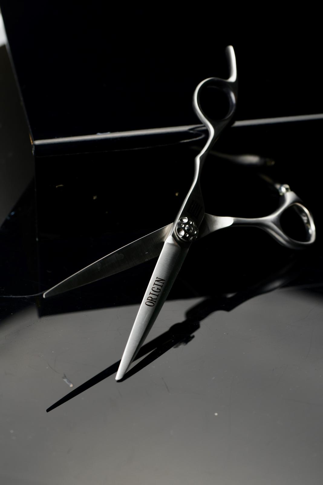
01 / Tradicional
02 / Texturizar
03 / Brillo Cromo
04 / Mate Profundo
Inspección detallada de las colecciones Matteru
Estuche rígido con revestimiento texturizado de lino grisáceo e imagotipo en bajorrelieve oro rosa.
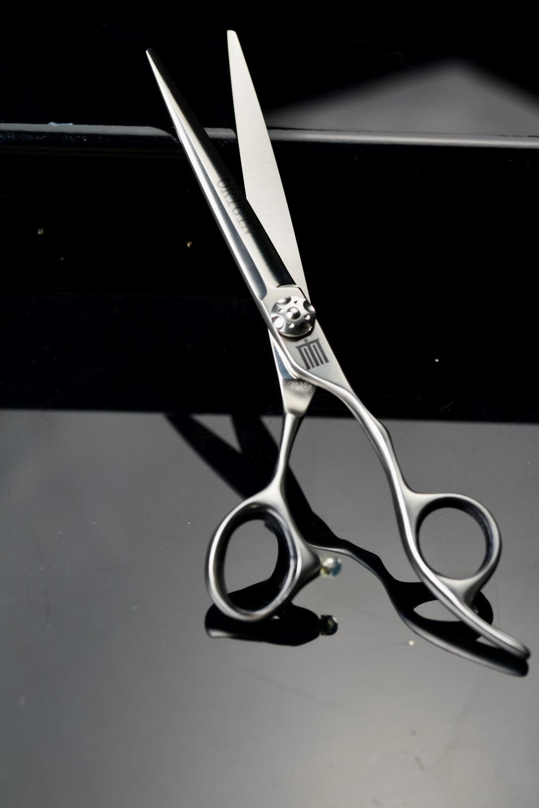
Detalle del sistema de pivotado y diseño de hoja recta para el mantenimiento de un balance óptimo durante el corte.
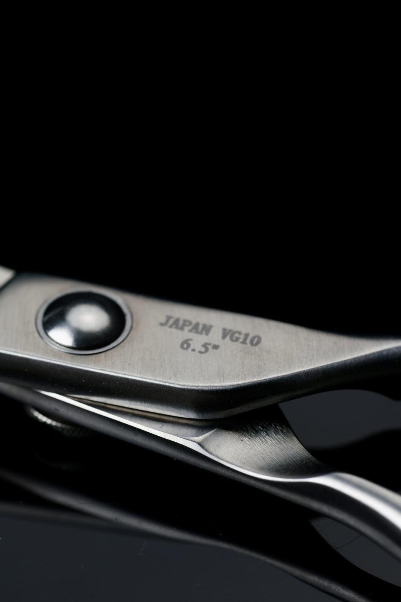
Grabado técnico 'Japan VG10 6.5 pulgadas', indicando la procedencia del acero cobalto de alta densidad.
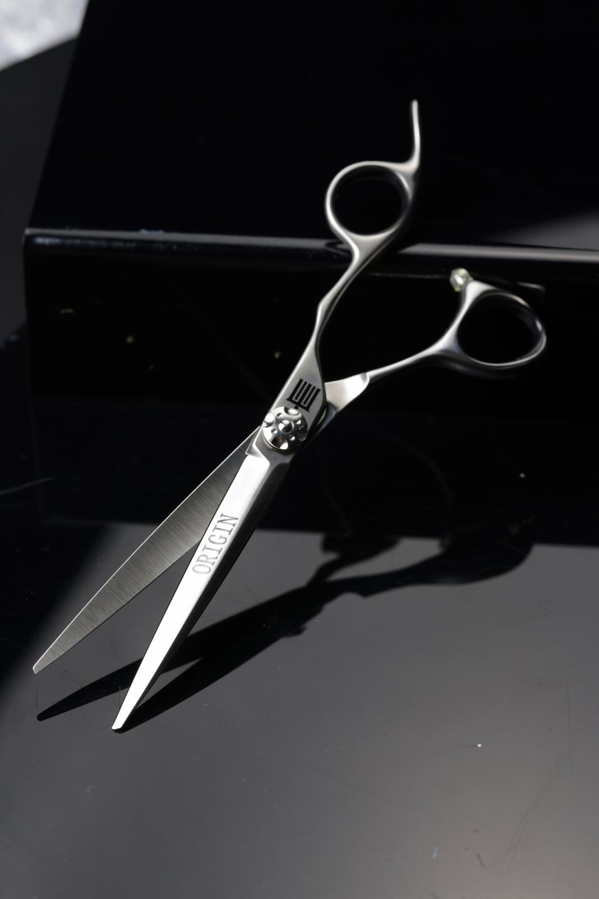
Perspectiva de las hojas de corte con vaciado cóncavo interno para un deslizamiento fluido de la hoja.
Vista completa lateral del modelo Origin con mango offset clásico y reposadedos curvo integrado.
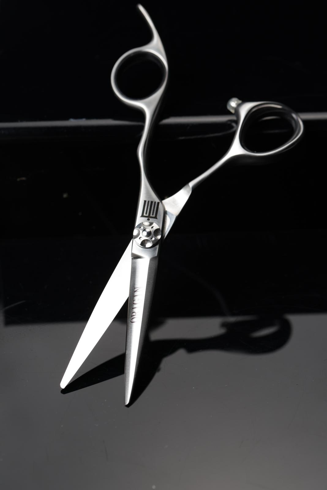
Tornillo de ajuste regulable con diseño dentado para un control táctil y seguro de la presión del muelle interno.
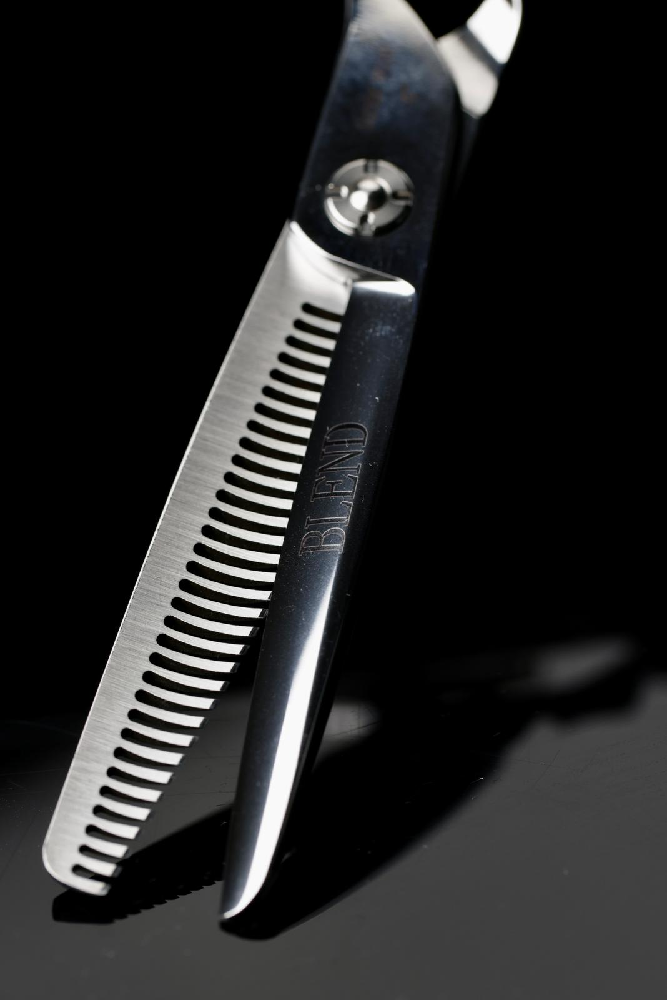
Corte transversal que expone la estructura de canales en los dientes de esculpir, diseñados para descarga progresiva.
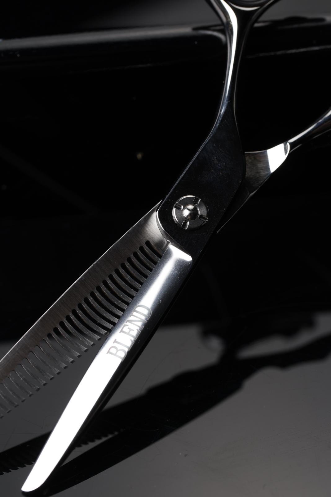
Tornillo estabilizador de fricción constante para evitar la fatiga y mantener un cierre uniforme de las hojas.
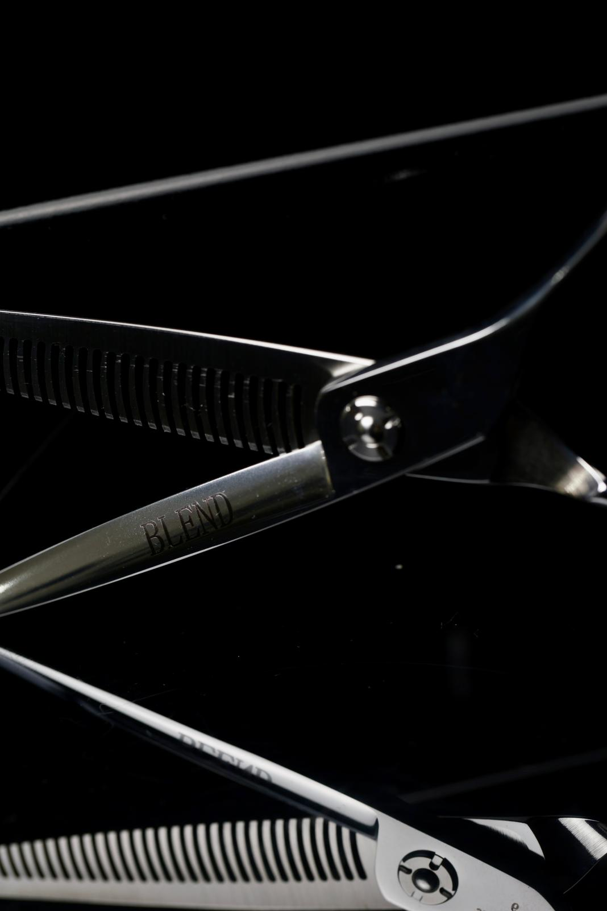
Detalle del texto indentado 'BLEND' en la hoja de corte de precisión, manteniendo acabados altamente pulidos.
Vista general que demuestra la anatomía offset equilibrada, ideal para el vaciado de volúmenes y degradados.
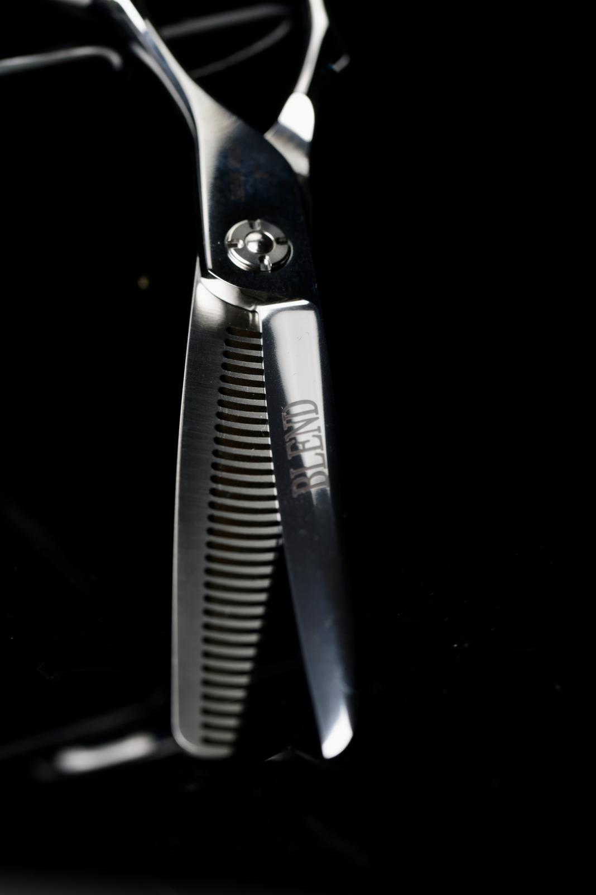
Hoja de vaciado en contacto directo con la hoja de corte lisa, logrando transiciones limpias y libres de tirones.
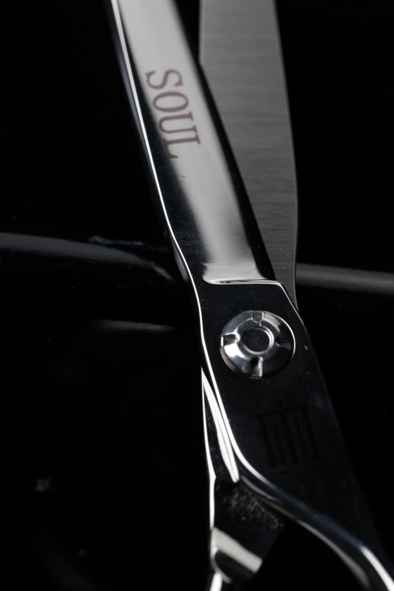
Detalle del texturizado reflectante en acero templado, con inscripción grabada al ácido en la cara exterior.
Tijera completa pulida en su totalidad a mano, garantizando un acabado sin porosidades que repele la humedad.
Estructura de corte continuo recubierta con aleación de titanio negro mate. Protege contra posibles corrosiones químicas.
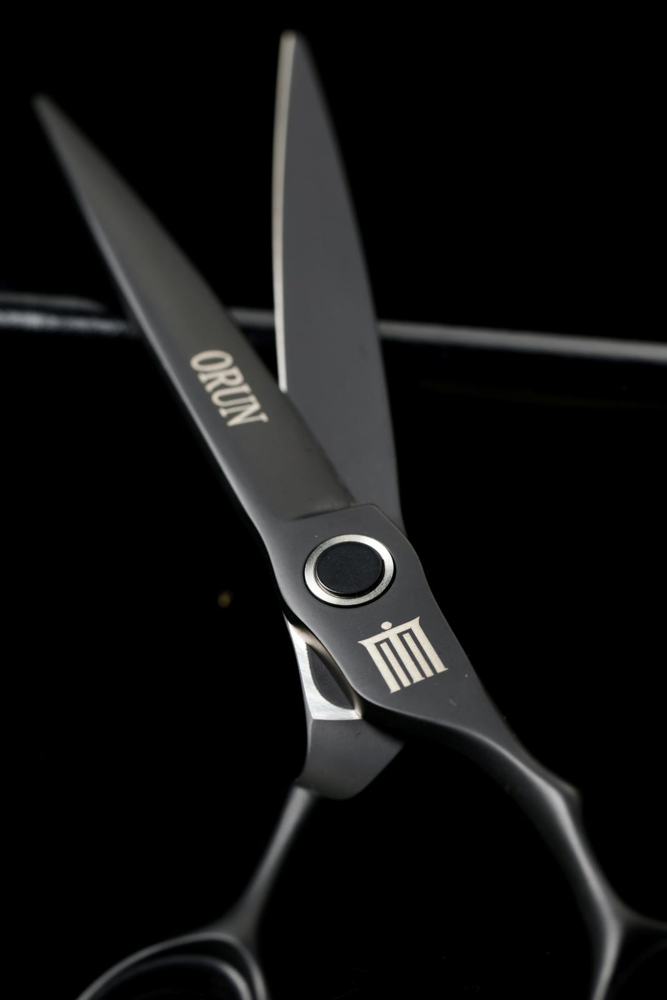
El imagotipo icónico de Matteru contrastado sobre el muelle de tensión negro con grabado láser de alta resolución.